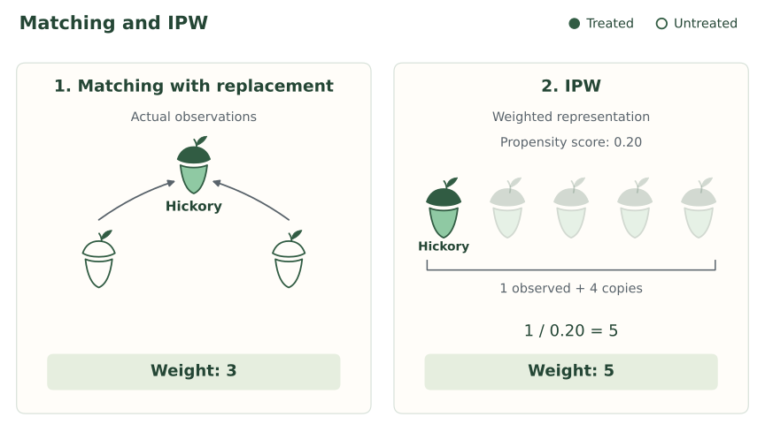
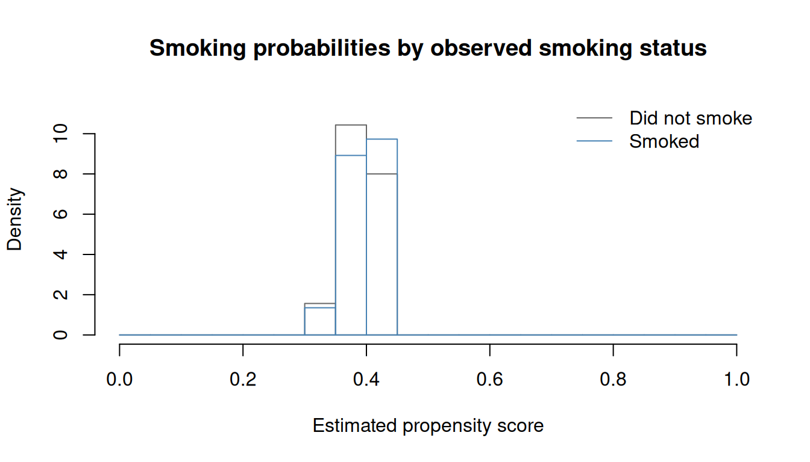
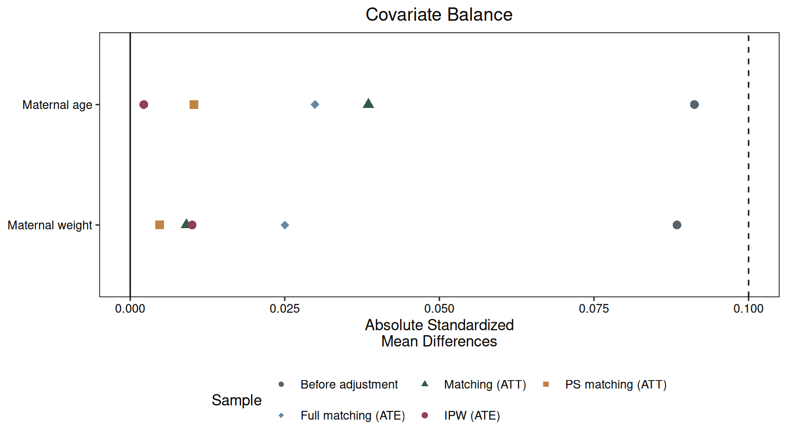

| Mother | Age | Weight | \(A\) |
|---|---|---|---|
| 1 | 19 | 182 | 0 |
| 2 | 33 | 155 | 0 |
| 3 | 20 | 105 | 1 |
| 4 | 21 | 108 | 1 |
Inverse probability weighting

Introduction
A causal effect can have more than one identification formula. We have already seen this. We first adjusted for the full covariate vector \(X\), then found that we could adjust for the propensity score \(e(X)\) instead. The causal question stayed the same. Only the expression we used to answer it changed.
Why should we care? Each identification formula suggests its own estimators, and those estimators trade off bias, noise, and computation differently. A different formula changes where the error can come from and how much noise we must tolerate to avoid it. So when we find a new identification formula, we gain a new set of estimators and a new set of tradeoffs to choose from.
Let’s look for another one.
Again, focus on a binary exposure \(A\) and our measured-confounding SCM:
\[ \begin{aligned} X&\leftarrow f_X(\epsilon_X),\\ A&\leftarrow f_A(X,\epsilon_A),\\ Y&\leftarrow f_Y(A,X,\epsilon_Y), \end{aligned} \]
with independent noise terms.
Weighting
Think about estimating \(E[Y(1)]\) using 1:1 propensity-score matching with replacement. Here are three people from a larger dataset:
| Person | \(A\) | \(e(X)\) | \(Y\) |
|---|---|---|---|
| Hickory | 1 | 0.20 | 6 |
| Hazel | 0 | 0.20 | 2 |
| Willow | 0 | 0.20 | 4 |
Hickory received treatment, so he supplies his own outcome. For each untreated person, we choose exactly one treated person with a similar propensity score to supply a surrogate outcome. Matching with replacement means the same treated person can be chosen again for another untreated person.
Hazel and Willow have the same propensity score as Hickory. Suppose we choose him as the match for each of them. Their estimated outcomes under treatment 1 are then both six. The completed matching estimates are:
| Person | \(A\) | \(e(X)\) | \(Y\) | Treated match | \(\hat\mu(X,1)\) |
|---|---|---|---|---|---|
| Hickory | 1 | 0.20 | 6 | n/a | 6 |
| Hazel | 0 | 0.20 | 2 | Hickory | 6 |
| Willow | 0 | 0.20 | 4 | Hickory | 6 |
Hickory supplies the estimated outcome under treatment for himself, Hazel, and Willow. His outcome enters our average three times:
\[ E[Y(1)] \approx \frac{6+6+6+\cdots}{1+1+1+\cdots} = \frac{3(6)+\cdots}{3+\cdots}. \]
The dots represent the remaining people in the dataset. Hickory’s outcome contributes \(3(6)\) to the numerator and weight three to the denominator. More generally, each treated person’s outcome appears once for themselves, plus once for every untreated person who uses them as a match. Untreated outcomes receive weight zero. Writing
\[ w_i= \begin{cases} 1+\text{number of times person }i\text{ is used as a match}, & a_i=1,\\ 0, & a_i=0, \end{cases} \]
we can sum over everyone to write our matching estimate as a weighted mean:
\[ E[Y(1)] \approx \frac{\sum_i w_i y_i} {\sum_i w_i}. \]
Do we have to find matches to get these weights? Could we get them directly from the propensity scores?
Hickory’s propensity score of 0.20 means a one-in-five chance of receiving treatment. Over many people with this score, we would see about four untreated people for every treated person. This suggests giving each treated person weight five: one for themselves and four for the untreated people they represent. For a general propensity score, the same reasoning gives
\[ 1+\frac{1-e(X)}{e(X)}=\frac{1}{e(X)}. \]
Another way to think about this is to follow Hickory. He has probability 0.20 of receiving treatment, so his outcome has probability 0.20 of entering our treated-outcome average. Giving it weight five restores one person’s representation on average:
\[ 0.20(5)+0.80(0)=1. \]
More generally,
\[ e(X)\frac{1}{e(X)}+\{1-e(X)\}(0)=1. \]
This is inverse probability weighting, or IPW. Matching determined Hickory’s weight by counting his uses as a surrogate. IPW assigns him weight five directly from his treatment probability.

Suppose a person has propensity score 0.05. Over many people with this score, how many untreated people would we see per treated person? What weight should a treated person receive? Check that this restores one person’s representation on average.
We would see about 19 untreated people for every treated person. Each treated person represents themselves plus 19 untreated people on average, giving weight
\[ 1+\frac{0.95}{0.05}=20=\frac{1}{0.05}. \]
Following one person, their outcome receives weight \(20\) if they are treated and zero otherwise. Their average representation is
\[ 0.05(20)+0.95(0)=1. \]
In a study of a depression treatment, suppose women are more likely than men to receive treatment at the same values of the other covariates. Compare a treated woman and a treated man whose other covariates agree. Without knowing their propensity scores, who should receive more weight?
The man. His propensity score is smaller, so his weight \(1/e(X)\) is larger. There are more untreated people per treated person at his covariate values, so his outcome has to represent more people.
Identification
Our intuition was that the weight \(1/e(X)\) lets each treated person stand in for everyone with their covariates, treated or not. Writing the weight as \(A/e(X)\) (equal to \(1/e(X)\) for treated people and zero for untreated people), the weighted contribution to the outcome is
\[ \frac{A}{e(X)} \times Y. \]
What is its average among people with the same \(X\)? Holding covariates fixed, treatment and outcome still vary, so we split the average by treatment value and weight each piece by its probability:
\[ \begin{aligned} E\left[\frac{YA}{e(X)}\Bigm| X\right] &=E\left[\frac{YA}{e(X)}\Bigm| X,A=1\right]P(A=1\mid X)\\ &\quad+E\left[\frac{YA}{e(X)}\Bigm| X,A=0\right]P(A=0\mid X). \end{aligned} \]
By definition of the propensity score, \(P(A=1\mid X)=e(X)\) and \(P(A=0\mid X)=1-e(X).\) Also, \(YA=Y\) when \(A=1\) and \(YA=0\) when \(A=0\), so the untreated term vanishes:
\[ E\left[\frac{YA}{e(X)}\Bigm| X\right] = E\left[\frac{Y}{e(X)}\Bigm| X,A=1\right]e(X). \]
Because \(e(X)\) is constant once we condition on \(X\), it comes out of the expectation and cancels:
\[ E\left[\frac{YA}{e(X)}\Bigm| X\right] =\frac{1}{e(X)}\,E[Y\mid X,A=1]\,e(X) =E[Y\mid X,A=1]. \]
This is the observed mean among treated people with covariates \(X.\) Under our measured-confounding SCM,
\[ E[Y\mid X,A=1]=E[Y(1)\mid X]. \]
Combining the two results,
\[ E\left[\frac{YA}{e(X)}\Bigm| X\right]=E[Y(1)\mid X]. \]
The weighted outcome recovers the mean potential outcome under treatment at each value of \(X\), including for people who were actually untreated.
So far we have held \(X\) fixed. To get the overall mean, we average over the covariate distribution using iterated expectations:
\[ E\left[\frac{YA}{e(X)}\right] =E\left[E\left[\frac{YA}{e(X)}\Bigm| X\right]\right] =E\left[E[Y(1)\mid X]\right] =E[Y(1)]. \]
For \(E[Y(0)]\), reverse the roles. Untreated people supply the outcomes with weight \(1/\{1-e(X)\}\), and treated people receive weight zero. Each untreated person represents themselves plus, on average, \(e(X)/\{1-e(X)\}\) treated people, for a total weight of
\[ 1+\frac{e(X)}{1-e(X)}=\frac{1}{1-e(X)}. \]
Repeating the argument with \((1-A)/\{1-e(X)\}\) gives
\[ E\left[\frac{Y(1-A)}{1-e(X)}\right]=E[Y(0)]. \]
Both derivations divide by \(e(X)\) or \(1-e(X)\), so neither can be zero. This is the conditional positivity assumption from earlier. Collecting the two derivations, we can state the following result:
Under the measured-confounding SCM, if \(0<e(X)<1\) with probability one and the expectations below exist, then
\[ E[Y(1)] =E\left[\frac{AY}{e(X)}\right], \]
and
\[ E[Y(0)] =E\left[\frac{(1-A)Y}{1-e(X)}\right]. \]
NoteTechnical note: the proof for treatment 0
An untreated person receives weight \(1/\{1-e(X)\}\), and a treated person receives weight zero. We can write both cases as \((1-A)/\{1-e(X)\}.\) Applying that weight to the outcome gives
\[ \frac{Y(1-A)}{1-e(X)}. \]
What does this give us on average for people with the same \(X\)? We want to calculate
\[ E\left[\frac{Y(1-A)}{1-e(X)}\Bigm|X\right]. \]
First, break the average into the two possible treatment values:
\[ \begin{aligned} E\left[\frac{Y(1-A)}{1-e(X)}\Bigm|X\right] &=E\left[\frac{Y(1-A)}{1-e(X)}\Bigm|X,A=0\right]P(A=0\mid X)\\ &\quad+E\left[\frac{Y(1-A)}{1-e(X)}\Bigm|X,A=1\right]P(A=1\mid X). \end{aligned} \]
Substitute \(P(A=0\mid X)=1-e(X)\) and \(P(A=1\mid X)=e(X)\):
\[ \begin{aligned} E\left[\frac{Y(1-A)}{1-e(X)}\Bigm|X\right] &=E\left[\frac{Y(1-A)}{1-e(X)}\Bigm|X,A=0\right]\{1-e(X)\}\\ &\quad+E\left[\frac{Y(1-A)}{1-e(X)}\Bigm|X,A=1\right]e(X). \end{aligned} \]
When \(A=0\), \(Y(1-A)=Y.\) When \(A=1\), \(Y(1-A)=0.\) This leaves
\[ E\left[\frac{Y(1-A)}{1-e(X)}\Bigm|X\right] =E\left[\frac{Y}{1-e(X)}\Bigm|X,A=0\right]\{1-e(X)\}. \]
Since we are conditioning on \(X\), \(1-e(X)\) is fixed. Pull it outside the conditional expectation and cancel:
\[ \begin{aligned} E\left[\frac{Y(1-A)}{1-e(X)}\Bigm|X\right] &=\frac{1}{1-e(X)}E[Y\mid X,A=0]\{1-e(X)\}\\ &=E[Y\mid X,A=0]. \end{aligned} \]
Now use consistency. Among untreated people, \(Y=Y(0)\), so
\[ E[Y\mid X,A=0]=E[Y(0)\mid X,A=0]. \]
Our measured-confounding SCM and the global Markov property give \(A\mathrel{\perp\!\!\!\perp}Y(0)\mid X.\) Therefore,
\[ E[Y(0)\mid X,A=0]=E[Y(0)\mid X]. \]
We have shown that
\[ E\left[\frac{Y(1-A)}{1-e(X)}\Bigm|X\right]=E[Y(0)\mid X]. \]
Only now do we average over \(X\), using iterated expectations:
\[ \begin{aligned} E\left[\frac{Y(1-A)}{1-e(X)}\right] &=E\left[E\left[\frac{Y(1-A)}{1-e(X)}\Bigm|X\right]\right]\\ &=E\left[E[Y(0)\mid X]\right]\\ &=E[Y(0)]. \end{aligned} \]
Estimating the effect
We have identified the intervention means. Now let’s estimate them from data, starting with a small example.
Example: Four people.
Suppose we observe the following covariates, treatments, and outcomes. The true propensity scores are supplied.
| Person | \(X\) | \(A\) | \(Y\) | \(e(X)\) |
|---|---|---|---|---|
| 1 | 0 | 1 | 6 | 0.25 |
| 2 | 0 | 0 | 2 | 0.25 |
| 3 | 1 | 1 | 10 | 0.75 |
| 4 | 1 | 0 | 4 | 0.75 |
We need two sets of weights. To estimate the mean under treatment 1, use \(A/e(X).\) To estimate the mean under treatment 0, use \((1-A)/\{1-e(X)\}.\) Each person supplies an observed outcome under only one treatment value, so one of their two weights will be zero.
Person 1 received treatment. His weight for estimating the mean under treatment 1 is \(1/0.25=4\), and his weight for estimating the mean under treatment 0 is zero. Person 2 did not receive treatment. Her weight for the first mean is zero, and her weight for the second is \(1/(1-0.25)=4/3.\) Repeating these calculations for Persons 3 and 4 completes the table:
| Person | Weight for \(Y(1)\): \(A/e(X)\) | Weight for \(Y(0)\): \((1-A)/\{1-e(X)\}\) |
|---|---|---|
| 1 | \(1/0.25=4\) | \(0/0.75=0\) |
| 2 | \(0/0.25=0\) | \(1/0.75=4/3\) |
| 3 | \(1/0.75=4/3\) | \(0/0.25=0\) |
| 4 | \(0/0.75=0\) | \(1/0.25=4\) |
For the mean under treatment 1, Persons 1 and 3 supply the outcomes. Person 1’s outcome receives weight four, while Person 3’s outcome receives weight \(4/3.\) Multiply each outcome by its weight, add, and divide by the total weight:
\[ E[Y(1)] \approx\frac{4(6)+(4/3)(10)}{4+4/3} =\frac{112/3}{16/3} =7. \]
For the mean under treatment 0, Persons 2 and 4 supply the outcomes. This time their weights are \(4/3\) and four, respectively. The same weighted-mean calculation gives
\[ E[Y(0)] \approx\frac{(4/3)(2)+4(4)}{4/3+4} =\frac{56/3}{16/3} =3.5. \]
Subtract the estimated mean under treatment 0 from the estimated mean under treatment 1:
\[ \operatorname{ATE}\approx7-3.5=3.5. \]
The estimated effect of treatment is an increase of 3.5 outcome units. We used the propensity scores to construct weights, then calculated a weighted mean in each treatment group.
To estimate the ATE using IPW:
- Estimate each person’s propensity score.
- Compute two weights to each person, \(A/\hat e(X)\) and \((1-A)/\{1-\hat e(X)\}.\)
- Calculate the weighted mean outcome separately for each set of weights
The weighted means we just calculated are normalized IPW estimators, also called Hájek estimators (Hájek 1971). For \(n\) people, we can write the same calculations as
\[ E[Y(1)] \approx\frac{\sum_{i=1}^n a_i y_i/\hat e(x_i)} {\sum_{i=1}^n a_i/\hat e(x_i)}, \qquad E[Y(0)] \approx\frac{\sum_{i=1}^n (1-a_i)y_i/\{1-\hat e(x_i)\}} {\sum_{i=1}^n (1-a_i)/\{1-\hat e(x_i)\}}. \]
How do these denominators connect to the identification result? The proposition gave us expectations of weighted outcomes. The corresponding weights have expectation one at every \(X\):
\[ \begin{aligned} E\left[\frac{A}{e(X)}\Bigm|X\right] &=\frac{E[A\mid X]}{e(X)}=1,\\ E\left[\frac{1-A}{1-e(X)}\Bigm|X\right] &=\frac{E[1-A\mid X]}{1-e(X)}=1. \end{aligned} \]
Averaging over \(X\) therefore still gives one. Writing out that averaging with iterated expectations,
\[ E\left[\frac{A}{e(X)}\right] =E\left[E\left[\frac{A}{e(X)}\Bigm|X\right]\right] =1, \]
and
\[ E\left[\frac{1-A}{1-e(X)}\right] =E\left[E\left[\frac{1-A}{1-e(X)}\Bigm|X\right]\right] =1. \]
Dividing each identified weighted outcome expectation by its expected weight leaves the intervention mean unchanged. This connects the weighted means to the expressions in the proposition. In our data, however, the mean weights need not be exactly one. In the four-person example, each set of weights sums to \(16/3\), rather than four. Dividing by its own weight sum gives each estimated intervention mean the form of a weighted average.
A data example in R
Example: Smoking and birth weight.
Return to the 189 births from the previous section. Let \(A\) indicate smoking during pregnancy and let \(Y\) be birth weight in grams. Collect maternal age and weight in \(X\), using the same working SCM as before.
Use the propensity model we fitted in the previous section:
\[ \log\left[\frac{\hat e(X)}{1-\hat e(X)}\right] \approx 0.23 -0.0147\,\text{age} -0.0026\,\text{weight}. \]
Age is in years and weight in pounds.
Both coefficients are negative: holding weight fixed, older mothers have a lower estimated probability of smoking. Holding age fixed, heavier mothers have a lower estimated probability of smoking.
To estimate mean birth weight under smoking, we weight the outcomes by \(A/\hat e(X)\): mothers who smoked receive weight \(1/\hat e(X)\), and mothers who did not smoke receive weight zero. Among mothers who smoked, older mothers’ outcomes receive more weight, holding maternal weight fixed. Outcomes from heavier mothers receive more weight, holding age fixed.
To estimate mean birth weight under not smoking, we use outcomes from mothers who did not smoke. Holding the other covariate fixed, should older mothers’ outcomes receive more or less weight? What about outcomes from heavier mothers?
The weight is \((1-A)/\{1-\hat e(X)\}\): mothers who did not smoke receive weight \(1/\{1-\hat e(X)\}\), and mothers who smoked receive weight zero. Among mothers who did not smoke, older mothers have a higher estimated probability of not smoking, so their outcomes receive less weight in estimating mean birth weight under not smoking. Heavier mothers have a higher estimated probability of not smoking, so their outcomes receive less weight in estimating that same mean.
Here are the first four mothers:
Mother 1 is 19 years old and weighs 182 pounds. Substitute her covariates into the fitted model to get her estimated log odds:
\[ 0.2320 -0.014732(19) -0.002559(182) \approx -0.5136. \]
Transform back to a probability:
\[ \hat e(19,182) \approx\frac{\exp(-0.5136)}{1+\exp(-0.5136)} \approx0.3743. \]
She did not smoke, so her weight for estimating mean birth weight under smoking is zero:
\[ \frac{0}{\hat e(19,182)}=0. \]
Her weight for estimating mean birth weight under not smoking is
\[ \frac{1-0}{1-\hat e(19,182)} \approx\frac{1}{1-0.3743}\approx1.60. \]
Mother 3 is 20 years old and weighs 105 pounds. The same substitution gives
\[ \hat e(20,105) \approx\frac{\exp\{0.2320-0.014732(20)-0.002559(105)\}} {1+\exp\{0.2320-0.014732(20)-0.002559(105)\}} \approx0.4179. \]
She smoked, so her weight for estimating mean birth weight under smoking is
\[ \frac{1}{\hat e(20,105)}\approx\frac{1}{0.4179}\approx2.39. \]
Her weight for estimating mean birth weight under not smoking is zero:
\[ \frac{1-1}{1-\hat e(20,105)}=0. \]
Calculate the scores and weights for Mothers 2 and 4 in the same way. In R, predict() calculates the scores. We then calculate a separate set of weights for each intervention mean:
birthwt_ipw$score <- predict(ipw_ps_fit, type = "response")
birthwt_ipw$weight1 <- with(birthwt_ipw, smoke / score)
birthwt_ipw$weight0 <- with(birthwt_ipw, (1 - smoke) / (1 - score))The completed calculations for these four mothers are:
| Mother | \(A\) | \(\hat e(X)\) | Weight for \(Y(1)\) | Weight for \(Y(0)\) |
|---|---|---|---|---|
| 1 | 0 | 0.3743 | 0.00 | 1.60 |
| 2 | 0 | 0.3428 | 0.00 | 1.52 |
| 3 | 1 | 0.4179 | 2.39 | 0.00 |
| 4 | 1 | 0.4125 | 2.42 | 0.00 |
Use weighted.mean() with each set of weights. All 189 outcomes appear in each call, but nonsmokers receive weight zero when estimating the mean under smoking, and smokers receive weight zero when estimating the mean under not smoking:
smoked <- birthwt_ipw$smoke == 1
ipw_mean1 <- with(birthwt_ipw,
weighted.mean(bwt, weight1))
ipw_mean0 <- with(birthwt_ipw,
weighted.mean(bwt, weight0))
ipw_ate <- ipw_mean1 - ipw_mean0
c(mean1 = ipw_mean1, mean0 = ipw_mean0, ATE = ipw_ate) mean1 mean0 ATE
2772.786 3047.119 -274.333 The estimated mean birth weights are 2772.79 grams under smoking and 3047.12 grams under not smoking. Their difference is -274.33 grams. Under our working SCM, smoking lowers mean birth weight by an estimated 274.33 grams.
How does this compare with our earlier estimate? In Propensity scores, outcome regression using the score and smoking gave an estimated decrease of 268.97 grams. The estimates are reasonably close.
Example: Smoking and low birth weight.
Now let \(Y=1\) indicate infant birth weight below 2,500 grams and \(Y=0\) otherwise, using the variable low. We keep the same mothers, smoking variable, and covariates.
Our weights depend on treatment and covariates, so they stay the same when we change the outcome. Replace bwt by low in the two weighted means. Because the outcome is binary, each weighted mean estimates a risk:
ipw_low_mean1 <- with(birthwt_ipw, weighted.mean(low, weight1))
ipw_low_mean0 <- with(birthwt_ipw, weighted.mean(low, weight0))
ipw_low_ate <- ipw_low_mean1 - ipw_low_mean0
ipw_low_rr <- ipw_low_mean1 / ipw_low_mean0
ipw_low_or <- (ipw_low_mean1 / (1 - ipw_low_mean1)) /
(ipw_low_mean0 / (1 - ipw_low_mean0))
c(risk1 = ipw_low_mean1, risk0 = ipw_low_mean0,
ATE = ipw_low_ate, relative_risk = ipw_low_rr, odds_ratio = ipw_low_or) risk1 risk0 ATE relative_risk odds_ratio
0.4020696 0.2570874 0.1449822 1.5639415 1.9431558 For the risk under smoking, nonsmokers still receive weight zero. For the risk under not smoking, smokers receive weight zero. Under our working SCM, the estimated risk of low birth weight is 40.2% under smoking and 25.7% under not smoking. Smoking therefore increases the risk by an estimated 14.5 percentage points. The estimated causal relative risk is 1.56, and the causal odds ratio is 1.94.
In the previous section, logistic outcome regression using the score and smoking gave an estimated risk increase of 14.2 percentage points. IPW gives 14.5 percentage points. Again, these are two estimates of the same causal contrast, obtained using different estimators.
Things to think about in practice
We have computed an estimate. Now look at the comparisons behind it and how much information supports them.
Positivity
Our identification argument required conditional positivity: both treatment values must have positive probability given the covariates, \(0<e(X)<1\). Do our data support the comparisons that this assumption requires? This question matters for propensity-score matching, adjustment, and weighting.
Look at the distribution of estimated propensity scores, separately for treated and untreated people. Two warning signs are worth looking for:
- Scores close to zero or one. A score of 0.001 means treatment is very unlikely at those covariate values. Over many people with that score, we would expect about 999 untreated people per treated person. A score of 0.999 reverses the problem: untreated outcomes are scarce. At these scores, a few outcomes supply most of the comparison under one treatment value.
- Regions with little or no overlap between the groups. Are there score ranges containing treated people but few or no untreated people, or the reverse? We lack observed comparisons in those regions.
Westreich et al. (2011) explicitly connect non-overlapping propensity-score distributions to possible nonpositivity.
For our birth-weight example, plot the estimated scores for mothers who smoked and mothers who did not:
ipw_bins <- seq(0, 1, length.out = 21)
ipw_hist0 <- hist(birthwt_ipw$score[!smoked], breaks = ipw_bins, plot = FALSE)
ipw_hist1 <- hist(birthwt_ipw$score[smoked], breaks = ipw_bins, plot = FALSE)
ipw_ylim <- c(0, 1.1 * max(ipw_hist0$density, ipw_hist1$density))
plot(ipw_hist0, freq = FALSE, col = NA, border = "grey40",
ylim = ipw_ylim, xlab = "Estimated propensity score",
main = "Smoking probabilities by observed smoking status")
plot(ipw_hist1, freq = FALSE, col = NA, border = "steelblue", add = TRUE)
legend("topright", c("Did not smoke", "Smoked"),
col = c("grey40", "steelblue"), lty = 1, bty = "n")
Here, the scores in both groups range from about 0.31 to 0.44. The fitted scores are away from zero and one, and both groups are represented across a similar range.
If warning signs appear, inspect the original covariates to identify the combinations behind them. Is one treatment impossible for those people, or simply rare in our sample? Restricting the analysis to a region with both treatment groups defines the causal effect for the people in that region.
Balance
The positivity checks ask whether we have observations to compare. Balance asks whether weighting has made the covariate distributions similar between treatment groups. Check the original covariates, just as we did after matching.
Use cobalt, as in the matching sections, to compare balance for the same 189 mothers across our methods. We will compare matching directly on age and maternal weight, propensity-score matching, full matching, and IPW.
The labels show each method’s target: ATT for nearest-neighbor matching and ATE for full matching and IPW. Use the original pooled standard deviation for each covariate throughout to put all the comparisons on the same scale.
Collect the matching weights from the earlier analyses. For the IPW balance check, cobalt uses one weight per mother: weight1 + weight0 gives her nonzero weight for her observed treatment group. The intervention-mean calculations above use their separate sets of weights, including zeros.
ipw_comparison_weights <- data.frame(
Matching = birthwt_nearest$weights,
PS_matching = birthwt_ps_nearest$weights,
Full_matching = birthwt_full$weights,
IPW = birthwt_ipw$weight1 + birthwt_ipw$weight0
)
ipw_balance <- cobalt::bal.tab(
smoke ~ age + lwt, data = birthwt_ipw,
weights = ipw_comparison_weights,
un = TRUE, s.d.denom = "pooled"
)Here are the absolute standardized mean differences. Values closer to zero indicate closer balance in that covariate’s mean:
| Covariate | Before | Matching (ATT) | PS matching (ATT) | Full matching (ATE) | IPW (ATE) |
|---|---|---|---|---|---|
| Maternal age | 0.091 | 0.039 | 0.010 | 0.030 | 0.002 |
| Maternal weight | 0.088 | 0.009 | 0.005 | 0.025 | 0.010 |
A single balance plot displays the same comparisons. The line at 0.10 is the common guide we used earlier:

All four methods bring these mean differences closer to zero. IPW gives the closest mean-age balance, while propensity-score matching gives the closest mean-weight balance. Also compare spread and relevant nonlinear features or interactions.
If balance remains poor, revisit the propensity model. Perhaps the relationship with age bends, or the association with maternal weight differs by age. Revise the model and check balance again.
Evaluate the propensity model through the weighted comparison it produces. Classification accuracy measures how well the model separates treated from untreated people; balance measures how closely the weighted covariate distributions agree. Brookhart et al. (2006) discuss why selecting variables for a propensity model differs from selecting them solely to predict treatment.
Large weights
Even with overlap, some outcomes may receive much more weight than others. For a mother who smoked, her weight when estimating mean birth weight under smoking is \(1/\hat e(X)\):
| Estimated propensity score | Weight under smoking, if she smoked |
|---|---|
| 0.50 | 2 |
| 0.05 | 20 |
| 0.001 | 1,000 |
A mother who did not smoke still receives weight zero for this mean. For the mean under not smoking, the large weights arise among nonsmokers with scores close to one: a score of 0.999 gives weight \(1/(1-0.999)=1000\).
Consider a different sample with four mothers who smoked. Their infants weigh 2,500, 3,000, 3,500, and 2,000 grams. Suppose their weights for estimating the mean under smoking are 2, 2, 2, and 1,000. The weighted mean is
\[ \frac{2(2500)+2(3000)+2(3500)+1000(2000)}{2+2+2+1000} =\frac{2018000}{1006}\approx2006\text{ grams}. \]
The last infant’s outcome carries about 99.4% of the total weight, so the weighted mean is almost that one infant’s birth weight.
One response is to cap the weights. Cap the last weight at 20 and repeat the calculation:
\[ \frac{2(2500)+2(3000)+2(3500)+20(2000)}{2+2+2+20} =\frac{58000}{26}\approx2231\text{ grams}. \]
The last outcome has less influence, and the estimate changes. Capping changes the weighting formula, so we trade possible bias for reduced variability.
In our actual birth-weight data, inspect the nonzero weights for each intervention mean:
summary(birthwt_ipw$weight1[smoked]) Min. 1st Qu. Median Mean 3rd Qu. Max.
2.262 2.418 2.517 2.555 2.659 3.271 summary(birthwt_ipw$weight0[!smoked]) Min. 1st Qu. Median Mean 3rd Qu. Max.
1.443 1.592 1.652 1.643 1.693 1.794 The largest is about 3.27.
We can limit weights by truncating propensity scores before constructing them. For example, replacing scores below 0.05 by 0.05 and above 0.95 by 0.95 caps each nonzero weight at 20:
bounded_score <- pmin(pmax(birthwt_ipw$score, 0.05), 0.95)
bounded_weight1 <- birthwt_ipw$smoke / bounded_score
bounded_weight0 <- (1 - birthwt_ipw$smoke) / (1 - bounded_score)
bounded_ate <- with(birthwt_ipw,
weighted.mean(bwt, bounded_weight1) -
weighted.mean(bwt, bounded_weight0))
c(original_ATE = ipw_ate, bounded_ATE = bounded_ate)original_ATE bounded_ATE
-274.333 -274.333 No scores in our example cross these bounds, so the estimate is unchanged. When truncation does change weights, check how both the estimate and covariate balance change. Repeat the cobalt balance check using bounded_weight1 + bounded_weight0. Report the bounds used. Cole and Hernán (2008) work through these choices.
Would stabilized weights solve the domination in our four-infant example? Suppose 30% of mothers smoked, and multiply every weight for estimating the mean under smoking by 0.30.
The weights become 0.6, 0.6, 0.6, and 300. Both the weighted outcome total and the weight sum are multiplied by 0.30, so
\[ \frac{0.30\{2(2500)+2(3000)+2(3500)+1000(2000)\}} {0.30\{2+2+2+1000\}} =\frac{2018000}{1006}\approx2006\text{ grams}. \]
The last infant still carries 99.4% of the total weight. Multiplying by the marginal treatment probability gives stabilized weights. For the mean under not smoking, the corresponding factor is 0.70. Each constant cancels in its own weighted mean, so the two estimated intervention means and the ATE stay the same.
Choosing a denominator
We introduced IPW using weighted means, also called Hájek estimators. The Horvitz–Thompson estimator is another widely used choice (Horvitz and Thompson 1952). It divides the weighted outcome total by \(n\), the number of people in the sample, including those with weight zero.
Return to treatment 1 in our four-person example. The Horvitz–Thompson calculation gives
\[ \frac{4(6)+(4/3)(10)}{4}=\frac{28}{3}\approx9.33. \]
The Hájek calculation uses the same numerator but divides by the weight sum:
\[ \frac{4(6)+(4/3)(10)}{4+4/3}=7. \]
Why choose one over the other? When the true treatment probabilities are known, the Horvitz–Thompson estimator is unbiased: it directly averages the weighted contributions from our identification result. The Hájek estimator divides by a weight sum that varies across samples. That ratio can introduce finite-sample bias, but normalization can also reduce variability from sample to sample.
The tradeoff concerns mean squared error:
\[ \operatorname{MSE}=\operatorname{Variance}+\operatorname{Bias}^2. \]
A reduction in variance can outweigh the squared bias introduced by normalization. Estimating the propensity scores introduces another source of error into both procedures. Neither method universally minimizes MSE. Datta and Polson (2026) discuss these estimators and their tradeoffs.
We can also combine the denominator choices. Khan and Ugander (2023) study adaptive normalization, using a denominator that combines \(n\) and the sum of weights, with the combination chosen from the data to reduce variance. Their approach connects the two estimators and extends to ATE estimation. We will continue using Hájek weighted means in our worked examples.
Uncertainty
As with our earlier propensity-score analyses, there are two sources of sampling uncertainty to account for. We estimated the propensity scores, so another sample would give different weights. We also used sampled outcomes to estimate the intervention means. These two steps use the same people; their uncertainties are connected.
A bootstrap repeats both steps. Sample 189 mothers with replacement, keeping each mother’s covariates, smoking status, and outcome together. Refit the propensity model, construct new weights, and calculate the difference of weighted means. Repeat this procedure to obtain a collection of estimates.
set.seed(661)
ipw_boot <- replicate(1000, {
boot_rows <- sample.int(nrow(birthwt_ipw), replace = TRUE)
boot_data <- birthwt_ipw[boot_rows, ]
boot_fit <- glm(smoke ~ age + lwt,
family = binomial(), data = boot_data)
boot_score <- predict(boot_fit, type = "response")
boot_weight1 <- boot_data$smoke / boot_score
boot_weight0 <- (1 - boot_data$smoke) / (1 - boot_score)
c(
grams = weighted.mean(boot_data$bwt, boot_weight1) -
weighted.mean(boot_data$bwt, boot_weight0),
risk_difference = weighted.mean(boot_data$low, boot_weight1) -
weighted.mean(boot_data$low, boot_weight0)
)
})The standard deviation of these estimates gives a bootstrap standard error. Their 2.5th and 97.5th percentiles give a percentile 95% confidence interval:
ipw_boot_summary <- data.frame(
Contrast = c("Mean difference (grams)", "Risk difference"),
Estimate = c(ipw_ate, ipw_low_ate),
SE = apply(ipw_boot, 1, sd),
Lower = apply(ipw_boot, 1, quantile, probs = 0.025),
Upper = apply(ipw_boot, 1, quantile, probs = 0.975)
)
knitr::kable(ipw_boot_summary, digits = c(0, 3, 3, 3, 3), row.names = FALSE)| Contrast | Estimate | SE | Lower | Upper |
|---|---|---|---|---|
| Mean difference (grams) | -274.333 | 109.240 | -497.851 | -64.160 |
| Risk difference | 0.145 | 0.071 | 0.007 | 0.288 |
Austin (2022) examines bootstrap uncertainty estimates for propensity weighting with continuous and binary outcomes.
Next, we combine outcome regression and weighting in Robust estimators.